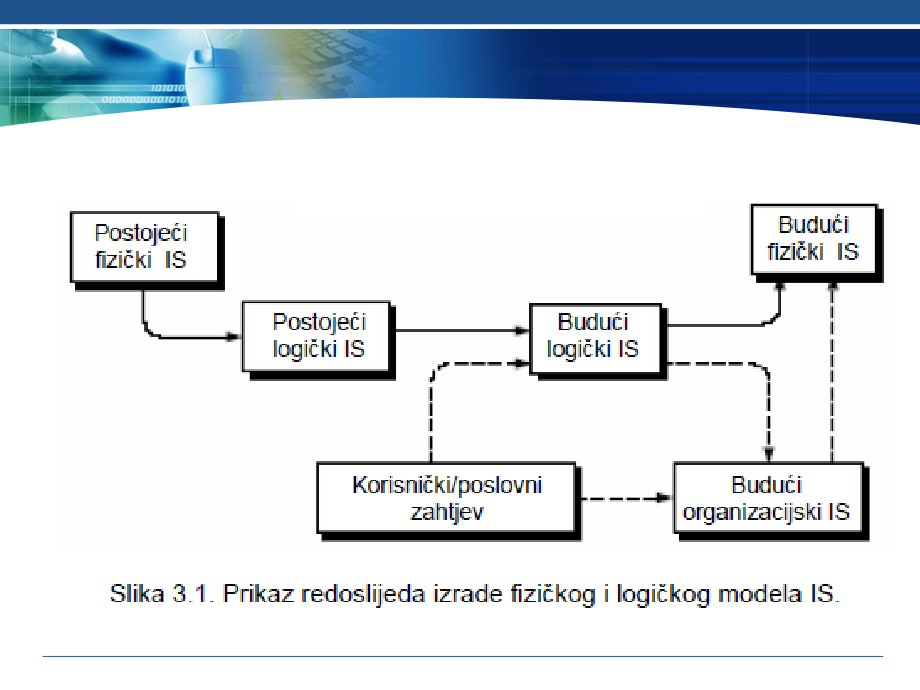
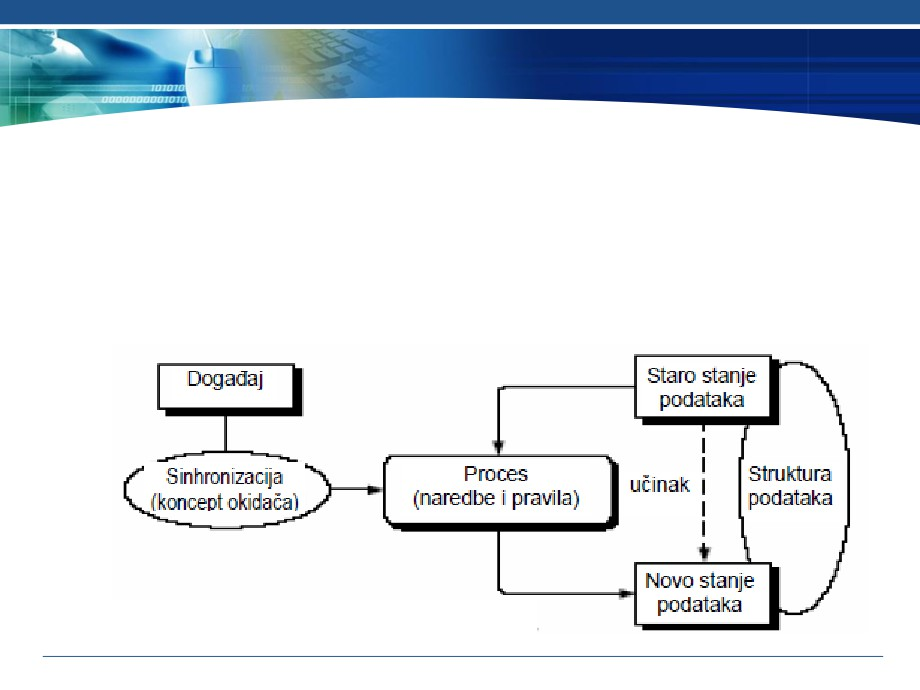

L
PROJEKTOVANJE
INFORMACIONIH SISTEMA
3. Uvod u projektovanje i definisanje zahtjeva za IS
Sadržaj nastavne jedinice
3. Uvod u projektovanje i definisanje zahtjeva za IS
3.1. Uvod u projektovanje iizgradnju IS
3.2. Definisanje zahtjeva za IS
3.1.1. Redosljed izrade fizičkog i logičkog modela
❖ Logički i fizički model budućeg IS, izraÿuje se na osnovu
poslovnih zahtjeva i zahtjeva krajnjih korisnika, a u skladu
sa fizičkim i logičkim modelom postojećeg IS
❖ Fizički model (ugradni, implementacioni, tehnički) opisuje
kako je sistem fizički i tehnički izgraÿen, ko, gdje i kada ga
koristi.
❖ Logički model (esencijalni, konceptualni, poslovni) opisuje
šta je sistem, šta radi, šta su podaci.
❖ Operativni (budući fizički) sistem prikazuje šta, ko i kada,
ali ne i gdje radi, a prema potrebi može se razmatrati
organizacion nivo, odnosno različito značenje podataka
zavisno od područja unutar poslovnog sistema i okruženja.

3.1.1. Redosljed izrade fizičkog i logičkog modela

3.1.2. Modelovanje IS
❖ Tehnika oblikovanja dijagramima odvija se na slijedeći
način.
◼ Izradom modela nastoji se opisati situacija u kojoj dogaÿaj iz
vanjskog svijeta pokreće (okida) process.
◼ Proces ima odreÿeni učinak na podatke u nekom stanju.
◼ Obavljanjem procesa podaci prelaze u novo stanje
3.1.3. Vrste modela IS
❖ Model podataka opisuje ŠTA su podaci i ŠTA oni opisuju.
❖ Konceptualni model opisuje podatke i veze izmeÿu
podataka.
❖ Najčešći konceptualni model je model entiteti-veze.
❖ Logički model opisuje strukturu podataka i logičkih
datoteka, a najčešći logički model je relacioni model
podataka.
❖ Model funkcija opisuje KAKO se prikupljaju, obraÿuju i
distribuiraju podaci.
❖ Model funkcija se oblikuje razlaganjem (dekompozicijom)
funkcija, iterativno od vrha prema dolje (od globalnih
funkcija do osnovnih procesa).
3.1.3. Vrste modela IS
❖ Model procesa opisuje obradu podataka posmatranog
sistema.
❖ Najčešći model procesa je dijagram toka podataka.
❖ Model dogaÿaja opisuje KADA se podaci obraÿuju, odnosno
razmatra učinke koje dogaÿaji imaju na procese i podatke.
❖ Kao primjer se može navesti dijagram promjene stanja.
❖ Model resursa/sredstava opisuje izvršioce, odnosno KO
obraÿuje podatke, GDJE se podaci nalaze i GDJE se podaci
obraÿuju.
❖ Modeliranje programa podrazumjeva predstavljanje
struktura (programskih) modula IS, npr. strukturnim
kartama.
3.1.4. Ključne aktivnosti i učesnici
❖ Ključne aktivnosti, u nekim metodama, zajedno se zovu
informaciono inženjerstvo.
❖ Kao ključne aktivnosti mogu se uočiti sistemska analiza i
sistemski dizajn.
❖ Sistemska analiza (analiza sistema) proučava poslovanje
sa ciljem da dâ preporuke za poboljšanja sistema i
specifikacije zahtjeva za rješavanje.
❖ Sistemski dizajn (dizajn sistema) omogućava specifikaciju
ili konstrukciju računarom podržanog rješenja
identifikovanih poslovnih zahtjeva.
3.1.4. Ključne aktivnosti i učesnici
Učesnici u navedenim aktivnostima su:
❖ Korisnik za kojeg se gradi IS, šta podrazumjeva korisnika sistema
i vlasnika sistema.
❖ Korisnik sistema neposredno koristi IS pri obavljanju
svakodnevnih poslova ili koristi informaciju dobijenu iz IS.
❖ Vlasnik sistema naručuje i plaća razvoj i održavanje sistema,
postavlja prioritete i odreÿuje politiku njegovog korištenja;
❖ Projektant (dizajner sistema) je tehnički stručnjak koji:
◼ oblikuje sistem tako da zadovolji zahtjeve korisnika,
◼ prevodi poslovne zahtjeve i ograničenja u tehničko rješenje,
◼ oblikuje datoteke, baze podataka, ulaze, izlaze,
◼ ekranske forme, mrežu i programe,
◼ integriše rješenje;
3.1.4. Ključne aktivnosti i učesnici
❖ Graditelj sistema (programer, projektant) konstruiše
komponente sistema na osnovu specifikacija koje rade
dizajneri sistema, provjerava ispravnost sistema i isporučuje
u primjenu,.
❖ Sistem analitičari razumiju i poslovanje i računarsku obradu
podataka. Njihov zadatak je da provode sistemsku analizu i
dizajn. Povezuju one koji trebaju računar i one koji poznaju
informacione tehnologije (IT).
❖ Sistem analitičar pomaže proučavanju problema i potreba
poslovanja radi odreÿivanja kako poslovni sistem i ICT mogu
najbolje riješiti problem i postići unaprijeÿenje poslovanja.
❖ Rezultati ovih aktivnosti su:
◼ Poboljšani poslovni procesi,
◼ Poboljšani informacioni sistemi te nove ili poboljšane
aplikacije
3.2. Definisanje zahtjeva za informacionim sistemom
❖ Prikupljanje informacija, podataka i činjenica su ključne
aktivnosti.
❖ Jedna od aktivnosti kod definisanja zahtjeva za IS su intervjui sa
ključnim korisnicima i radni sastanci.
❖ Kao zamjena za intervjue koriste se upitnici i ankete, koji su
pogodni i za prikupljanje informacija o resursima.
❖ Analiza dokumentacije podrazumjeva prikupljanje cjelokupne
dokumentacije značajne za poslovanje, radi boljeg utvrÿivanja
pravila, poslovne politike i ciljeva poslovanja.
❖ Nužna je ocjena postojećih aplikacija i/ili računarom podržanih
podataka, radi analize podataka, njihove konverzije u novi IS.
❖ Posmatranje, odnosno neposredni uvid u poslovne procese je
značajan vid definisanja zahtjeva za IS.
❖ Postupak analize mora biti prilagoÿen korisniku.
❖ Evidentiranje rezultata analize poželjno je obaviti CASE alatima.
3.2. 3. Postupak intervjuisanja
❖ Intervju mora biti neusiljen i elastičan razgovor sa
ispitanikom u obliku niza pitanja i odgovora.
❖ Sagovornici su rukovodioci, krajnji korisnici i ostali
učesnici iz poslovnog sistema.
❖ Standardno uključuje dva sagovornika (individualni), ali
može i više sagovornika (grupni).
❖ Informacije se prikupljaju nizom pojedinačnih razgovora.
❖ Razgovore treba voditi prema unaprijed dogovorenom
planu i rasporedu, šta treba da obezbjedi koordinator
intervjua.
❖ Postupak intervjua je spor i neefikasan.
❖ Nakon završetka analize i sinteze dobijenih informacija,
neke razgovore treba ponoviti da bi se upotpunile dobijene
informacije ili uskladili proturječni iskazi.
3.2. 4. Tehnika intervjuisanja
❖ Priprema za razgovor treba da sadrži:
◼ Utvrÿivanje informacija koje treba saznati,
◼ Proučavanje postojeće dokumentacije i prethodnih
nalaza,
◼ Odreÿivanje dokumentacije koju treba prikupiti i
◼ Priprema pitanja koja će biti postavljena tokom
razgovora.
3.2. 4. Tehnika intervjuisanja
❖ Plan i obavljanje razgovora može da se odvija na slijedeći
način:
◼ Trajanje prvog razgovora oko 2 sata
◼ Početak razgovora, koji sadrži predstavljanje učesnika i
upoznavanje sa svrhom razgovora ;
◼ Voÿenje razgovora, odnosno postavljanje pitanja i
zapisivanje odgovora, prikupljanje dokumentacije, ... ;
◼ Završetak razgovora je približno 5 do10 minuta prije
isteka planiranog vremena;
◼ Zahvala na razgovoru
3.2. 4. Tehnika intervjuisanja
Dokumentovanje razgovora sačinjavaju:
❖ Samostalno pisanje zapisnika.
❖ Kada u razgovoru sudjeluje više analitičara, odreÿuje se voditelj
razgovora koji je ujedno i zapisničar, a ostali ulažu primjedbe;
❖ Zapisnik treba da sadrži:
◼ naziv projekta,
◼ vrijeme i mjesto održavanja razgovora,
◼ spisak učesnika,
◼ sadržaj razgovora (tekst zapisnika),
◼ popis prikupljene dokumentacije i
◼ ime zapisničara;
❖ Zapisnik mora sadržavati ono što je rečeno i slijediti tok
razgovora;
❖ Zapisnik ne smije nametati zaključke, jer su oni rezultat analize.
3.2. 5. Preporuke za voÿenje intervjua
Preporuke za voÿenje intervjua:
❖ Tokom provoÿenja intervjua treba pitati o svemu što se
smatra važnim:
1. Pitanja zatvorenog tipa: Koliko ... obraÿujete (u nekom
razdoblju)?, Na koji način obraÿujete ... ?;
2. Pitanja otvorenog tipa: Što mislite o ... ?, Koji su najveći
problemi ... ?;
3. “Probna” pitanja: Zašto?, Možete li navesti primjer za
takvu situaciju?, Molim detaljnije objašnjenje za
❖ Analizom odgovora se:
◼ razdvajaju činjenice od mišljenja,
◼ utvrÿuje se da li pojedine činjenice odgovaraju drugima,
◼ analiziraju činjenice koje se ne poklapaju i
◼ vrši provjera odgovora različitih sagovornika na isto
pitanje
3.2. 5. Preporuke za voÿenje intervjua
Preporučuje se slijedeće ponašanje:
❖ iskrenost i nepristranost
❖ pažnja i jezgrovitost tj. “brzo misli, jasno govori”,
❖ izbjegavanje sugestivnih pitanja,
❖ nenametanje zaključaka i ležernost.
❖ Grupno intervjuiranje je potrebno izbjegavati i po potrebi
nadoknaditi radnim sastancima.
❖ Ovu vrstu intervjuisanja provesti kada se želi utvrditi
zajednički interes ili protivrječnost.
3.2. 6. Upitnici i ankete
❖ Upitnik je, u suštini, pismeni intervju.
❖ Sadrži pitanja koja se postavljaju tokom razgovora
(okvirno 20 pitanja).
❖ Može se dostaviti korisniku prije ili nakon intervjua.
❖ Nedostaci upitnika su slijedeći:
◼ ispitanik može prilagoditi (kontrolisati) svoje odgovore,
◼ teško je procijeniti iskrenost (spontanost) odgovora,
◼ može i obeshrabriti ispitanika.
❖ Anketa može da obuhvatiti više ispitanika.
❖ Pitanja su zatvorenog tipa, a odgovori i obrada odgovora
mogu se standardizovati.
❖ Pogodna je za popis resursa.
3.2. 7. Proučavanje dokumenata
❖ Prikupljaju se svi dokumenti do kojih se može doći.
❖ U prvom redu treba prikupiti dokumente koji su nastali kao
rezultat analize procesa, tipične dokumente (pravilnici,
zakoni, obrasci, izvještaji) i dokumente nastale analizom
podataka.
❖ Poželjno je da dokumenti budu reprezentativni, tj.
popunjeni na tipičan način.
❖ Stalno bilježenje nekih podataka ne mora značiti da su ti
podaci stvarno potrebni.
❖ Treba prikupiti više uzoraka iste vrste dokumenta!
3.2. 7. Proučavanje dokumenata
❖ Vrijednost informacija o analiziranoj organizaciji
prikupljena (samo) preko dokumenata je niska.
❖ Praksa može odudarati od pravilnika i administrativnih
obrazaca.
❖ Treba shvatiti:
◼ zašto i kada dokumenti nastaju,
◼ kako se popunjavaju,
◼ koliko su potrebni,
◼ šta treba promijeniti da bi se popravili (sadržaj, lakoća
popunjavanja i čitanja).
❖ Nužno je modele (podataka), razmatrane analizom,
provjeriti kod korisnika.
3.2. 8. Evidencija i analiza postojećih aplikacija
❖ Budući da su nedostaci opreme, podrške i podataka
najčešći razlozi za izgradnju novog IS, potrebno ih je
evidentirati i analizirati.
❖ Vrši se procjena aplikacija i podataka u primjeni, i to:
◼ korišteni programski jezici i alati
◼ podržane funkcije i način posluživanja programa,
◼ meÿusobna povezanost različitih aplikacija i podataka,
◼ postojeće platforme kao i sastav i stepen informatičke
obučenosti korisnika.
❖ Analiziraju se nedostaci sistemske opreme i programske
podrške.
3.2. 8. Evidencija i analiza postojećih aplikacija
❖ Nedostaci modela podataka mogu biti različiti.
❖ Najčešći nedostaci su različitost modela podataka
postojećih aplikacija i nedostaci unutar pojedinih modela.
❖ Različitost modela podataka postojećih aplikacija se
očituje:
◼ entiteti iz stvarnog svijeta nisu jednako zastupljeni u
postojećim modelima,
◼ isti entitet iz stvarnog svijeta pojavljuje se pod različitim
nazivima,
◼ isti entitet iz stvarnog svijeta opisan je različitim atributima,
◼ dva ili više entiteta iz stvarnog svijeta su prikazani različitim
brojem entiteta u modelu podataka.
3.2. 9. Posmatranje poslovnog sistema
❖ Definisanje zahtjeva za IS se može dopuniti uvidom u
poslovne procese, odnosno posmatranjem radnih sredina.
❖ Posmatra se lokacija i kretanje ljudi, tok izvršavanja
poslova, fizički ulazi i izlazi sistema, izrada i razmjena
dokumenata, procesi osnovne djelatnosti.
❖ Prednost ovakvog pristupa je u tome što je analitičar u
stanju da realno sagleda poslovni proces.
❖ Nedostaci posmatranja poslovnog sistema su neefikasnost,
znatan utrošak vremena, ometanje i nelagodnost
posmatranih osoba, mogućnost manipulacije posmatrača.
❖ Podaci dobijeni iz malog broja kratkotrajnih posmatranja
mogu biti nepouzdani i netačni.
❖ Posmatranje na licu mjesta je najteža metoda za
utvrÿivanje činjenica.
3.2. 10. Radni sastanci
❖ Radni sastanci (sjednice) se organizuju da analitičari i
korisnici zajednički provode analizu i oblikovanje.
❖ Cilj sjednice je pronalaženje najboljeg rješenja.
❖ Prednosti radnih sastanaka su njihova pogodnost za
projekte kojima se rješavaju problemi važni za cijeli
poslovni sistem ili veći dio poslovanja.
❖ Njihovim organizovanjem se izbjegavaju specifični i
nejasni zahtjevi, preciznije se ustanovljava opseg projekta
i bolje uočava protivrječnost zahtjeva.
❖ Nedostaci radnih sjednica su pasivnost učesnika,
“usitnjavanje” razgovora i često udaljavanje od tema.
❖ Sjednice treba da traju više dana (5 do 10) u nekoliko
sedmica, pa je ovom zahtjevu u praksi vrlo teško udovoljiti
zbog obaveza učesnika.
3.2. 11. Najčešći problemi pri prikupljanju informacija
❖ Ponašanja korisnika često može da uzrokuje niz problema:
❖ 1. Korisnik navodi brojne potrebe, gomilu nepotrebnih
izvještaja, ekranskih formi, sortiranja, izračunavanja i sl.
◼ Ovakav pristup obično je uzrokovan pomanjkanjem iskustva
korisnika, koji ne zna šta bi mu stvarno moglo zatrebati ili nije
u stanju izdvojiti ono šta je bitno;
❖ 2. Korisnik traži više mogućnosti, a zapravo mu je
potrebna samo jedna ili dvije.
◼ Dodatni zahtjevi služe za postizanje bolje nagodbe sa
analitičarom.
◼ Ova taktika obično oslikava korisnika sa dobrim poznavanjem
onoga šta želi, a zahtjeve treba reducirati na one realne;
❖ 3. Korisniku nedostaje volja ili znanje, a ponekad oboje.
◼ Šanse za uspješno definisanje problema su male, jer samo
korisnik može izraziti svoje potrebe i probleme.
L
PROJEKTOVANJE
INFORMACIONIH SISTEMA
3. Uvod u projektovanje i definisanje
zahtjeva za IS
Pitanja ?